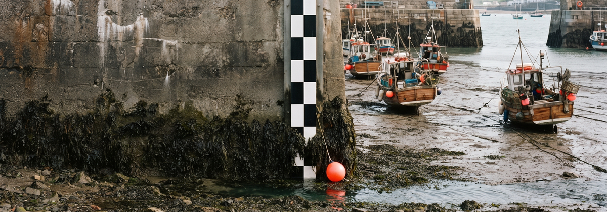

What it measures
The sampler reports process state, thread count, user and system CPU ticks, voluntary and nonvoluntary context switches, read and write syscall counters and byte counters where readable, open file descriptor count, and child PIDs. The CSV carries the PID and the sampling duration, and each row is a measured quantity. Usage, as the README gives it: ./analyze-process-behavior [params]. Its one requirement is pandas>=2.1.0.

Parameters
| Parameter | What the README says |
|---|---|
-h | Show help message and exit |
-p | Process ID to analyze. If not provided, attempts to trace the current process. |
-o | Output CSV file to store the analysis results (default: process_analysis.csv). |
-t | Duration in seconds to sample the process (default: 10 seconds). |
-l | Set the logging level (default: INFO). |
Stated limits
The report includes a context switches per second rate as a number only; it makes no anomaly or malicious activity verdict. A PID that does not exist, or that exits during sampling, ends the run at exit 1. The licence line at the close of the README is a copyright line only, with no licence named.